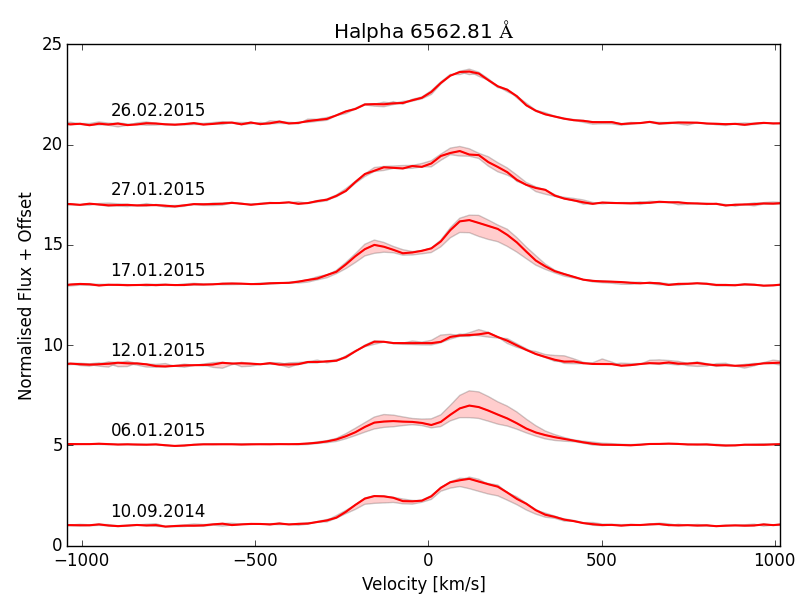
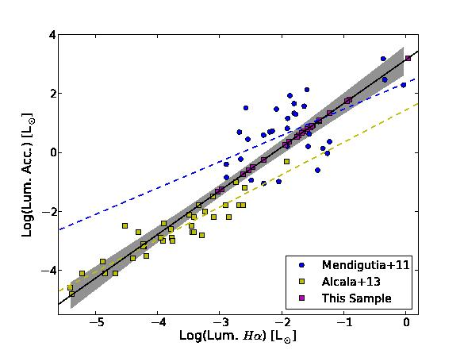
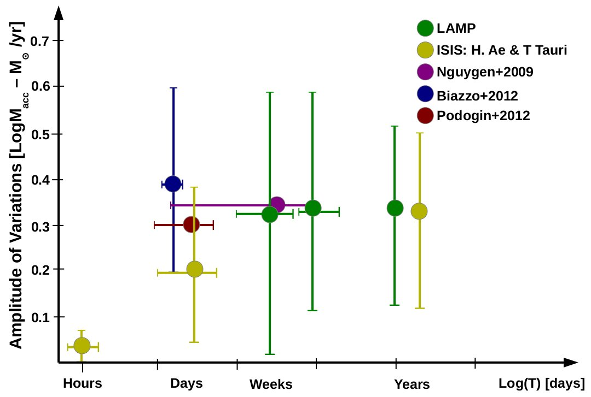

Below are a few select publications with short explanations and figures from the published paper.

Fig1. - Time-series of the Hα emission of RW Aur after the start of the dimming event. (Fig. 5 in paper). This emission demonstrates that the star is a strong accretor (i.e. still growing in mass), and weaker blue shifter emission then was observed before the dimming event.
The disappearing act: A dusty wind eclipsing RW Aur [MNRAS 2016]
RW Aur is an interesting young star that has seen much attention recently due to some enigmatic activity.
The brighter, primary component of the system (RW Aur A) has undergone two large dimming events (~2 and 3 mag.) in the last decade, most recently mid 2014 - mid 2016, and though young stars at this evolutionary stage are inherently variable these dimming events are deeper and longer lasting then are usually observed. RW Aur A also has one of the highest accretion rates (Basri & Bertout 1989) and is driving a powerful atomic jet (Hirth et al. 1994), as well as hosting an unusally small disk (Osterloh & Beckwith 1995) that has been distrubed, possibly by RW Aur B, resulting in a a large trailing arm of material from the disk.
We used both photometric and spectroscopic observations taken before and during the dimming event to investigate the cause. We concluded the source of the obscuration was most likely a warm dusty wind.
My role in this project was to analyse the IFU observations taken with FRODOSpec. The python code used to reduce and analyse the data can be found here. To the right is a plot I made from these data showing the changes observed in the Halpha line during the dimming event.
Authors: Bozhinova, I; Scholz, A.; Costigan, G.; Lux, O.; Davis, C. J.; Ray, T.; Boardman, N. F.; Hay, K. L.; Hewlett, T.; Hodosan, G.; Morton.
Reference: MNRAS 463, 4,pp. 4459-4468. [FULL PAPER]
Pre- and Post-burst Radio Observations of the Class 0 Protostar HOPS 383 in Orion [ApJL 2015]
Hops 383 was observed to have a large infrared outburst in between 2004 and 2008. This a young star still embedded in its prenatal core, and these kinds of outbursts are associated with large increases in the mass flow from the surrounding material onto the protostar. These outbursts are predicted by theory and they are deemed neccesary in order for young stars to gain the neccesary mass we observed them with when fully formed but remain relatively under-observed.
In this paper we compared the infrared observation with VLA observations to compare the radio signal, which should trace the outflowing material in the stellar jet. Our current models of accretion and stellar jets suggests that these are connected phenomenon. However, no corresponding burst or quenching of the radio signal was observed. This suggests that these two processes are not as strongly connected as we have previous thought.
Authors: Galvan-Madrid,R.; Rodriguez, L. F.; Liu, H.; Costigan , G.; Palau,A; Zapata, L. A.; Loinard, L. (APJL 2016, 806, 2, L32, 5) [Full Paper]

Fig. 2 Accretion luminosity versus Hα line luminosity (Same emission line as seen above). The solid black line indicates the fit to both data sets and the shaded grey region indicates the 2-σ confidence interval around this fit. See paper for full explanation.
Temperaments of young stars: Rapid mass-accretion rate changes inT Tauri and Herbig Ae stars [2014]
With observations of 15 young active stars (T Tauri and Herbig Ae stars) we investigated variations on short timescales (minutes, hours, days, weeks up to years).
These stars are young stars still in the process of forming, and so are likely to undergo a lot of variations, which are not well defined.
This work was highly complimentary to our pervious work (see below) and with it we were able to put an upper limit to the variability in these young stars finding the timescales of weeks dominate over the timescales of years.
In order to perform a uniform analysis over the entire sample (which spanned a large mass range 0.1 to 5 solar masses) we fitted observed accretion luminosities and line luminosties for a number of different data sets. This allowed us to derive a new relation which we then used for the entire sample. This fit can be seen to the right in Fig. 2. The code used to create this figure can be found here
Authors: Costigan , G., Vink, J., Scholz, A., Ray, T., Testi, L. (MNRAS 440, 4, 3444-3461) [Full Paper]

Fig. 3 Magnitude of variations in accretion rates versus timescales over which they are observed. This plot includes data from different data sets. Original plot from Costigan et. al 2014.
LAMP: the long-term accretion monitoring programme of T Tauri stars in Chamaeleon I [2013]
Variability studies often target variable stars, so many of them do not give a true picture of a 'normal variability'.
This study specifically set out to study a unbiased sample of young stellar objects in the Chameleon region.
The study covered the timescales of weeks, months and years. We found the dominate timescales of accretion variations in these targets to be the shortest timescales, which in this study was weeks.
Fig. 3 shows this study put in context with other variable studies (which used similar activity traces i.e. optical emission lines associated with accretion). Together all of these works suggest that variations occur on timescales cloes to the rotation periods of these stars. This is a likely situation as these systems are often non-axial symmetric and so any rotation will change the viewing angle of the mass flows onto the surface of the star.
Authors: Costigan , G., Scholz, A. Stelzer, B, Ray, T., Vnik, J., Mohanty, S.
MNRAS 427, 2, 1344-1362.